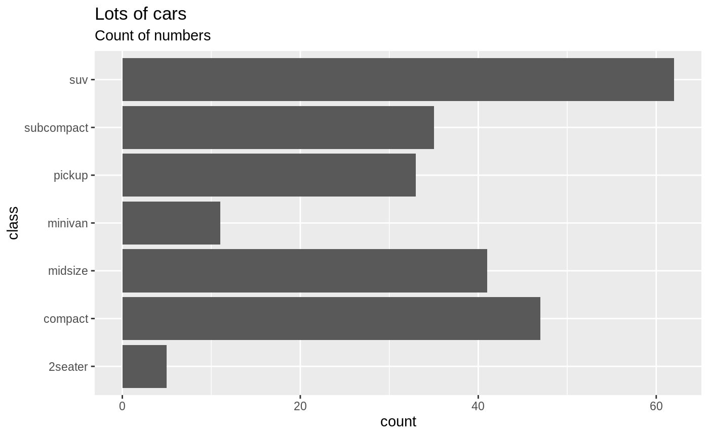
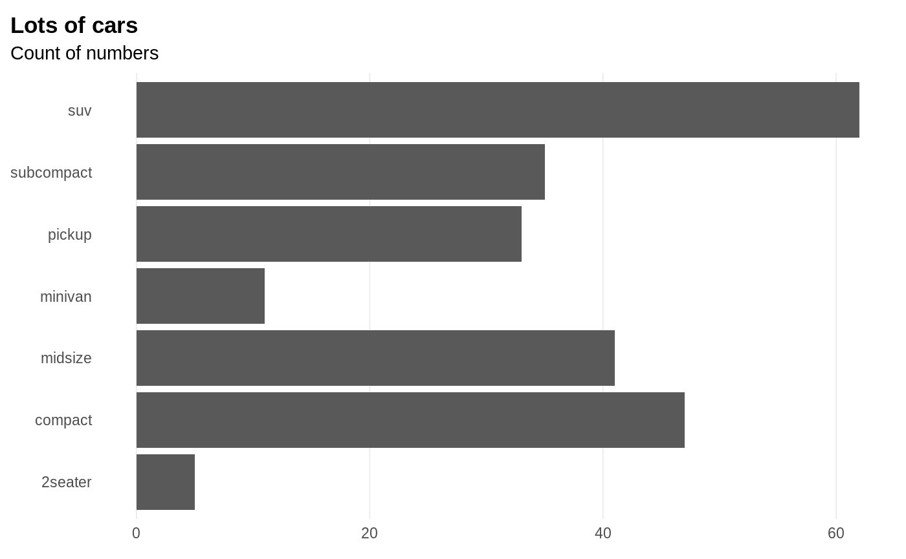
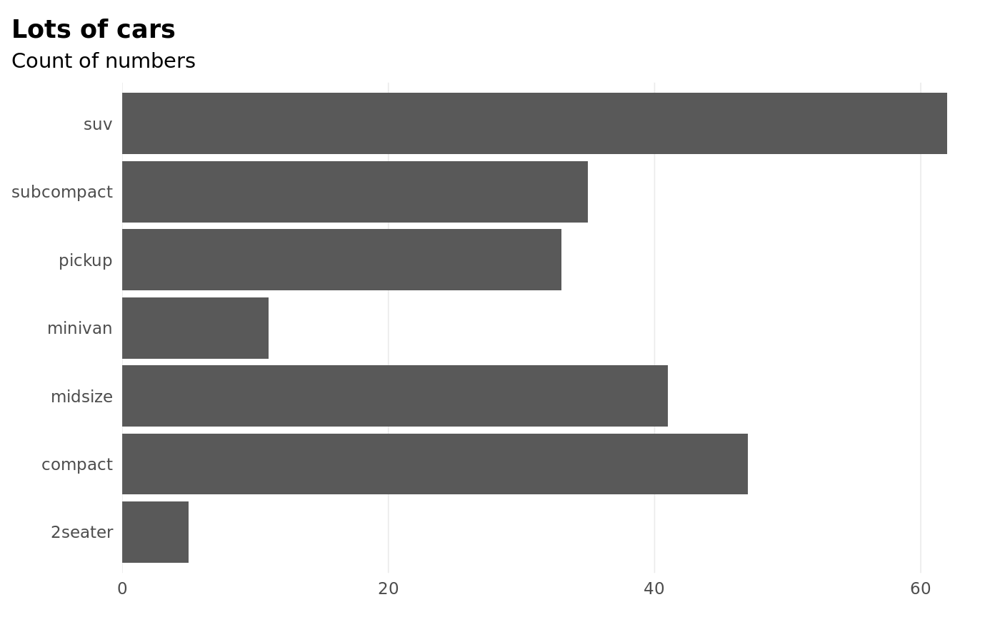
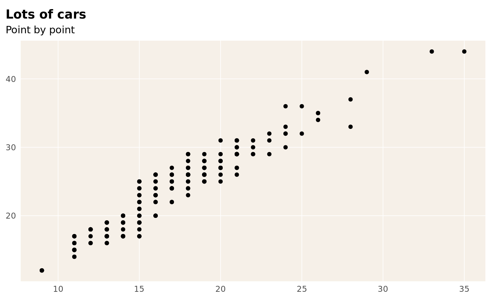
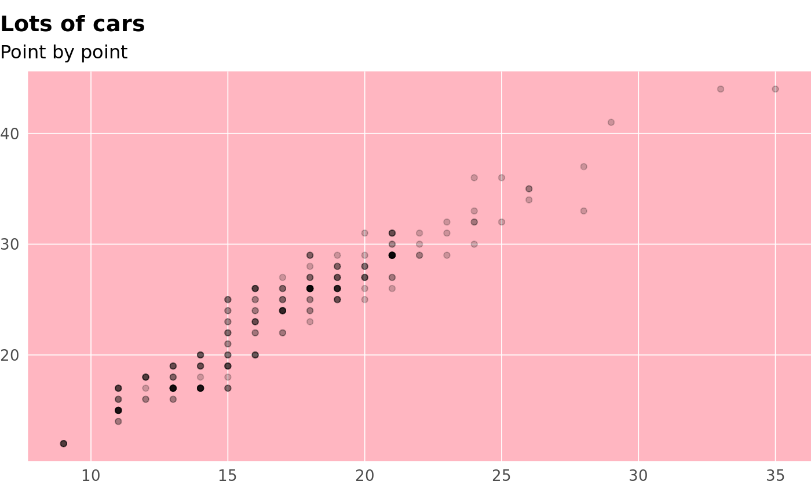
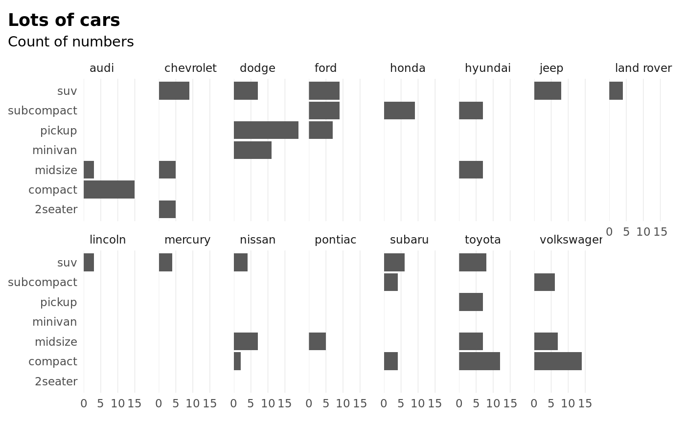
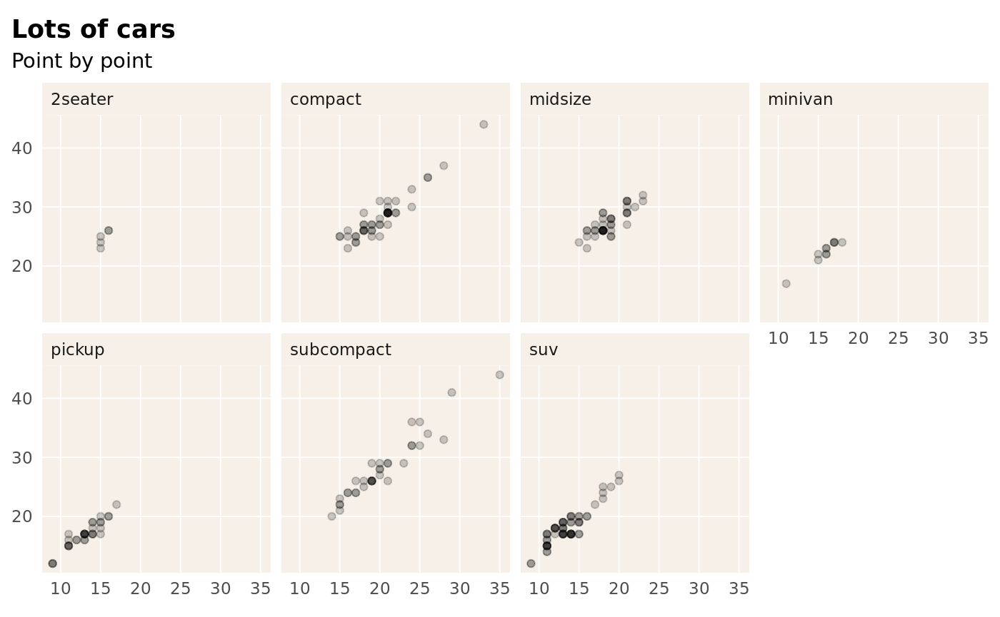
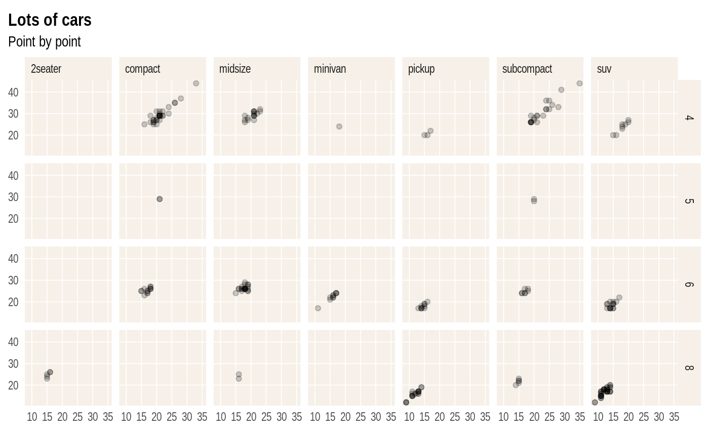
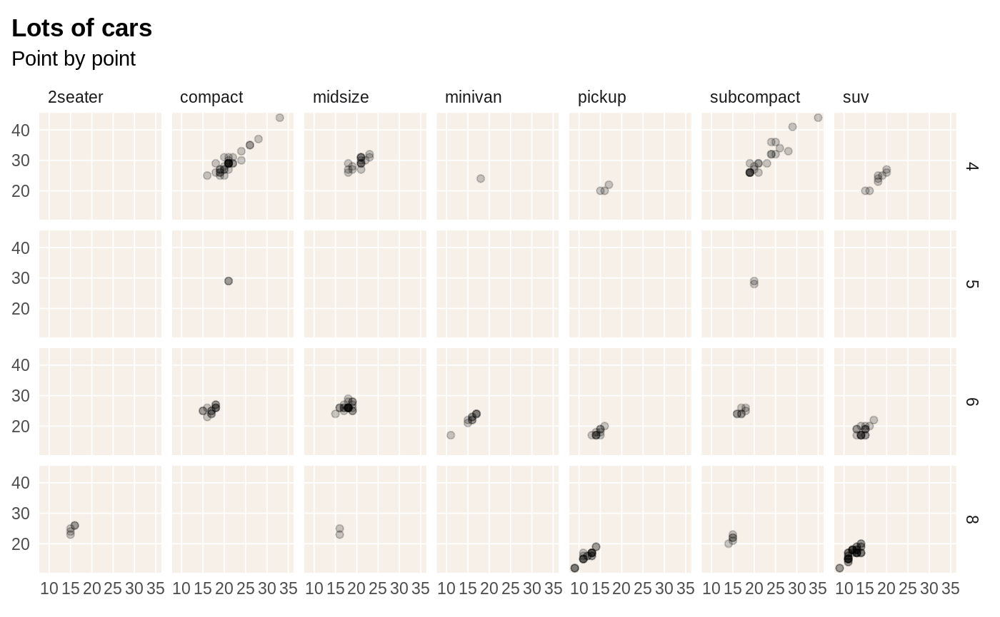

NB: This vignette temporarily serves to test and fine-tune the theme_schola() theme and to showcase typography.
When judging fonts, I would put quite a lot of emphasis on how they display figures, in particular whether the numerals have fixed width by default, meaning they align well: 99 is the same width as 11. Roboto Condensed, IBM Plex Sans, Titillium Sans and Econ Sans all do. Roboto Sans is nice in that it has a normal-width sibling, Roboto, which also has fixed-width figures. It is good to have the normal and condensed fonts when needed, e.g. the condensed works well for crowded axes or longer titles.
Note the Arial Narrow theme would also be a good choice - this also has fixed width figures, but its normal-width sibling Arial does not.
Open Sans, which the Schola website uses, also has nice figures (certainly could be used for text and tables) but is a bit too wide for charts.
Both of these could be showcased here later and integrated in the package.
First, let’s see the default plot, no theme
p <- ggplot(mpg) +
geom_bar(aes(y = class)) +
labs(title = "Lots of cars", subtitle = "Count of numbers")
p
using theme_schola() defaults
in combination with flush_axis, and using a different font:

Scatterplot, using yet another font
ggplot(mpg) +
geom_point(aes(cty, hwy)) +
theme_schola("scatter", family = "IBM Plex Sans") +
labs(title = "Lots of cars", subtitle = "Point by point")
Smaller text, flush alignment
ggplot(mpg) +
geom_point(aes(cty, hwy), alpha = .2) +
theme_schola("scatter", base_size = 9, side_margin = 0) +
labs(title = "Lots of cars", subtitle = "Point by point")
theme_schola()
ggplot(mpg) +
geom_point(aes(cty, hwy), alpha = .2) +
theme_schola("scatter", base_size = 12, side_margin = 0, family = "Roboto Condensed") +
labs(title = "Lots of cars", subtitle = "Point by point") +
theme(panel.background = element_rect(fill = "lightpink"))
Smaller text, using Arial Narrow
p +
theme_schola("x", multiplot = T) +
scale_x_continuous(expand = flush_axis) +
facet_wrap(~ manufacturer, nrow = 2)Same without aesthetic adjustment for facet_wrap()
p +
theme_schola("x", multiplot = F, family = "Public Sans") +
scale_x_continuous(expand = flush_axis) +
facet_wrap(~ manufacturer, nrow = 2)
Small mutliples scatter and make it look like The Economist
ggplot(mpg) +
geom_point(aes(cty, hwy), alpha = .2) +
theme_schola("scatter", multiplot = T, family = hrbrthemes::font_es,
title_family = hrbrthemes::font_es_bold) +
labs(title = "Lots of cars", subtitle = "Point by point") +
facet_wrap(~ class, nrow = 2)
Small mutliples grid, using another font setup
p +
theme_schola("x", multiplot = T, family = "IBM Plex Sans Light",
title_family = "IBM Plex Sans Bold") +
scale_x_continuous(expand = flush_axis) +
facet_grid(cyl ~ drv)Small mutliples scatter grid, using Arial Narrow
ggplot(mpg) +
geom_point(aes(cty, hwy), alpha = .2) +
theme_schola("scatter", multiplot = T, family = "Arial Narrow") +
labs(title = "Lots of cars", subtitle = "Point by point") +
facet_grid(cyl ~ class)
Same but without multiplot parameter
ggplot(mpg) +
geom_point(aes(cty, hwy), alpha = .2) +
theme_schola("scatter", multiplot = F) +
labs(title = "Lots of cars", subtitle = "Point by point") +
facet_grid(cyl ~ class)